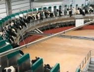
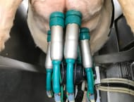
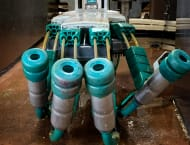

КРУПНЕЙШЕЕ ФЕРМЕРСКОЕ ХОЗЯЙСТВО КРАСНОЯРСКОГО КРАЯ Молочно-товарная ферма ИП ГК (Ф)Х Зубарева Н.В. крупнейший производитель сырого молока
Смотреть видео о насКФХ Зубаревой Н.В. на первом месте среди сельхозпредприятий Красноярского края,
получивших наивысшие результаты по валовому
производству молока на 1.01.2022 года.
Мы произвели 30469,6 тонн молока!
- 105 тонн
Суточное производство молока на 01.08.2022 года
- 8 994
Голов скота голштинской породы
- >464
Количество рабочих мест на нашей ферме
- 15 000 га
Из них 5 400 га кормовых культур, 9 600 га зерновых культур.
НАШИ РЕКОРДСМЕНКИ
Новейшее оборудование
Предприятие С НОВЕЙШИМ ОБОРУДОВАНИЕМ — доильное оборудование немецкой компании «GEA» — это автоматизированная роботизированная доильная карусель DAIRY PRO Q — первая в России
- 
- 
- 
НАПРАВЛЕНИЯ
ПРОИЗВОДСТВО МОЛОКА —
ДМБ1 Доильный зал тип «Елочка», на котором доятся коровы в первые дни после отела. Родильное отделение.
ДМБ2 роботизированная доильная карусель Dairy Pro Q на 72 места немецкой фирмы GEA, доится основное стадо — около 2700 голов.
ДМБ3 роботизированная доильная карусель Dairy Pro Q на 72 места немецкой фирмы GEA, в планах запуск в 2023 году.
Более 45 роботизированных каруселей Dairy Pro Q установлено во всём мире. На ферме установлена первая в России и третья в мире по величине. Мы получаем молоко высшего сорта с низким количеством соматических клеток (не более 170)
Преимущества Dairy Pro Q:
Бережное доение;
Превентивный менеджмент здоровья;
Умные системы охлаждения;
Одинаковое обслуживание каждой коровы.